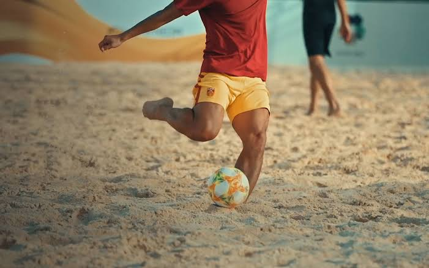
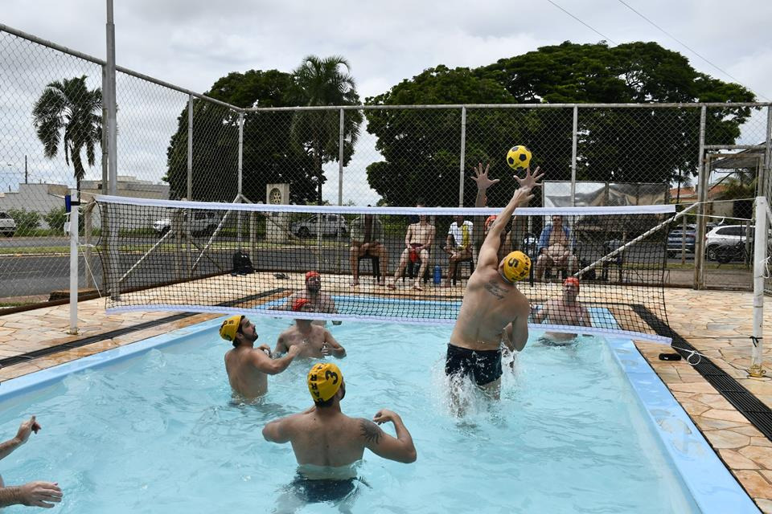

Tão antigos quanto o homem, os esportes são uma das invenções mais benéficos do homem. Além de manter o corpo saudável, ainda auxiliam na criação de uma série de comportamentos positivos, como a humildade, a união, a empatia, dentre outros.
E os esportes com a bolão são, sem nenhuma dúvida, os mais populares. Mas você sabe a diferença entre alguns deles? É justamente isso que iremos descobrir abaixo.
| Esportes | Origem | Ambiente | Objetivo | Equipe | ||
|---|---|---|---|---|---|---|
| 1 | |
Baseball | EUA, 1971 | Campo com 1/4 de círculo, de 92 a 108, 2m de raio | Realizar o maior número de corridas. | Nove jogadores em cada time. |
| 2 |  | Beach soccer | 1930, Brasil | Quadra de areia com 35 ou 37 mx 26 ou 27 de largura. | Realizar gols no campo adversário. | Cinco jogadores em cada time. |
| 3 |  | Biribal | 1968, Brasil. | Piscina com 4 x 8 x 1,3m. | Derrubar a cola na quadra adversária. | 2 a 4 jogadores por time. |
| 4 | |
Frescobal | Brasil, 1946 | Ao a livre. | Manter a bola no ar pelo maior tempo possível. | Geralmente um conra um. |
Saiba mais acessando o Link